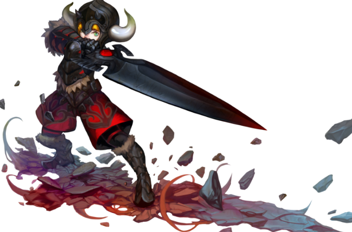
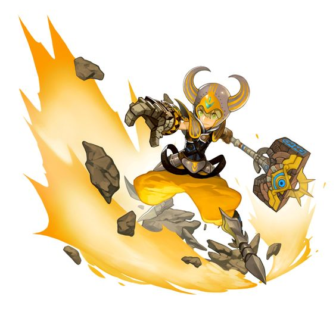

Warrior

Karakter ini menggunakan senjata bertipe melee / jarak pendek sebagai senjata utamanya. Terdapat 2 jenis class reguler yang dapat dipilih pada level 15, yaitu : sword master dan mercanary. Dan satu class special yang dapat kalian ambil pada karakter ini ketika level 15, yaitu : "AVENGER". class tersebut dapat kalian ambil kalau kalian memilih karakter DARK AVANGER. Kemudian ketika mencapai level 45 / 50, kalian dapat memilih 5 class berbeda (4 class untuk karakter reguler. Dan sisanya untuk karakter special). Gladiator dan Lunar Knight untuk class Sword Master. Sedangkan Barbarian dan Destroyer untuk mercanary. Itu semua untuk warrior reguler. Untuk yang special hanya bisa lanjut ke 1 job saja, yaitu : DARK AVANGER.
- Sword Master

class yang gesit dan memiliki kecepatan serang yang tinggi,dan lebih fokus kepada skill magic-nya. Walaupun kekuatan serang yang lebih kecil dibanding Mercenary, jika dibandingkan,kekuatannya sama saja. Misalnya, Mercenary 1 hit mengurangi 5000 hp, sedangkan sword master dengan 3 kombo akan mengurangi 6000 hp.
- Gladiator
- Lunar Knight / Moonlord
Lanjutan dari Class Sword Master dalam skill tree Fisik. Dengan skill Evasion Slash (Invicible Frame) yang digunakan untuk menghindari serangan dari musuh sekaligus Counter Attack, dan juga skill andalan nya yaitu Finish Attack.
Gladiator Memiliki Skill EX yaitu Triple Slash (Dapat menggunakan tombol kanan), Foward Thurst (Dapat menggunakan Tombol kanan), Flash Stance (Dapat menggunakan Tombol kanan), Line Drive (Menggunakan tombol S dapat memperpendek jarak Line Drive), Dan Finish Attack (Mengkonsumsi 15 Buuble). Dan Memiliki Instant Skill dan Awakening Skill.
Instant Skillnya adalah jika Menggunakan Dash Kick/Dash Slash/Dash Combo Akan Mengaktifkan Line Drive Instant. Sedangkan Awakening Skill nya dimulai dari Passive Awakening: Triple Slash (Menambah 2 Hit) Forward Thrust (Damage meningkat, Recover HP 3%, Animasi serangan forward thrust berubah jika digunakan dalam posisi berhenti) Break (Cooldown lebih cepat. Membuat 10 [Phisical Rising/Buuble]) Parrying Stance (Counter slash dapat diaktifkan manual dengan menekan normal attack tanpa harus terkena serangan musuh Saat melakukan counter, Invincibility meningkat.
Dan Active Awakening: Slide Dodge (Meluncur kearah yang diinginkan sambil menebas pedang. Dapat digunakan saat casting skill lain Mengkonsumsi bubble 4 [Physical],Hyper Drive (Menebas kearah yang diinginkan sebanyak 4x, Tekan normal attack untuk menambah hit Mengkonsumsi 15 bubble [Physical] ).
Lanjutan dari Class Sword Master dalam skill tree Magic. Lunar Knight lebih fokus dalam skill magic dalam skill tree Sword master,Skill nya yaitu Moon Blade Dance dan Flash Stance.
Lunar Knight/Moonlord memiliki Skill EX Yaitu Moonlight Splitter (menambah Hit pada Skill ),Cyclone Slash (Memperkuat Angin pada Cyclone Slash),Cresent Cleave (menggunakan Tombol S akan memperrapat Cresent Cleave),Halfmoon Slash (Menambah Serangan Halfmoon Slash Mengkonsumsi 5[Magical Energy]),Dan Moon Blade Dance (Menggunakan Klik kanan Menambah Hit Moon Blade Dance Mengkonsumsi 30[Magical Energy]).
Dan serta memiliki Instant Skill dan Awakening Skill. Instant Skillnya adalah Jika kita menggunakan Luring Slash maka halfmoon Slash EX aktif dan mengkonsumsi 5 Buuble, Sedangkan Awakening Skill nya Dimulai dari Passive Awakening: Moonlight Splitter Mengeluarkan 3 Angin dan Menghasilkan 5[Magical Energy], Cyclone Slash Waktu Casting Cyclone Slash Berkurang Drastis.
Menambah 10[Magical Energy], Eclipse Mengularkan Cyclone arah 4 angin saat casting Eclipse menghasilkan 10[Magical Energy], Dan Luring Slash Area Luring Slash bertambah luas. Dan Active Awakening: Moon Blader Mengubah Normal Attack Menjadi Moon Blade Attack, Setiap Hit moon blade akan mengurangi Cooldown Smash X.
- Mercenary
- Barbarian
- Destroyer
- Avenger
- Dark avenger

class yang berdaya serang fisik tinggi, namun dibanding Sword Master, Mercenary masih lebih lamban dalam menyerang. Walaupun lambat, tetapi daya serangnya yang tinggi dapat digunakan untuk menghancurkan lawan dengan cepat.

Lanjutan dari Class Mercenary dengan skill tree combo,Skillnya yaitu Bone Crash yang dapat digunakan untuk tambahan damage saat menyerang musuh.Barbarian memiliki Skill Ex Yaitu: Stomp (mengurangi action Speed sebanyak 20%),Demolition Fist (Menambah Hit Menjadi 2), Circle Swing (Menambah hit menjadi 2 hit (tambahan hit 1)). Whirlwind (Mempertambah Damage).
Bone Crash (Menambah Hit),Barbarian Memiliki Instant Dan Awakening Skill. Instant Barbarian adalah ketika casting Dash Kick + Bone Crash INS aktif. Awakening Skillnya Dimulai dari Passive Awakening: Weapon Mastery (Critical meningkat sebesar 20%) Stomp (Shockwave kedua akan memberi efek knockdown dan memberikan damage tambahan,Efek slow dihilangkan, Superarmor break meningkat), Demolition Fist (Mengurangi cooldown skill Demolition Fist sebanyak 5 detik jika Demolition Fist berhasil hit), Devastating Howl (Tidak mengkonsumsi [Anger] saat menggunakan Devastating Howl).Dan Barbarian Memiliki Skill Spesial yaitu Circle Break yang mengkonsumsi 50 anger,saat cast circle swing maka penggunaannya seperti wind shot (Sniper).
Lanjutan dari Class Mercenary dengan skill Massive Damage,Skill nya yaitu Maelstorm Howl(mengkonsumsi 5 Anger) menyedot lalu meledakkan musuh dengan damage yang besar dan juga skill yang memiliki super armor tinggi,dan Memiliki Charging howl Yaitu Skill Sejenis guardian force versi Destroyer (Mengkonsumsi 10 Anger).Dan mempunyai Skill Ex yaitu: Flying Swing (Memperluas Serangan), Circle Bomb (Menyimpan Fire ATK), Bombs Away (Memperluas Area, Tekan S akan mempersempit), Rolling Attack (mengkonsumsi 20 Buuble Serta jarak nya meluas), Maelstrom Howl (memperluas jarak dan Attack).

Class spesial yang memiliki kecepatan Serang yang Rendah dan lebih fokus pada skill fire-nya, walaupun kekuatan serang yang lebih lambat dibanding Sword Master dan Mercenary. Tetapi mempunyai serangan damage yang sangat kuat.

Lanjutan dari Class Avenger dengan skill Fire attack, Skillnya yaitu Dark Crash dan Avenger Force, Ketika berubah menjadi Dark avenger serangan semua Skill avenger meningkat serta damagenya juga meningkat.
 Facebook :
Facebook :  IG :
IG :